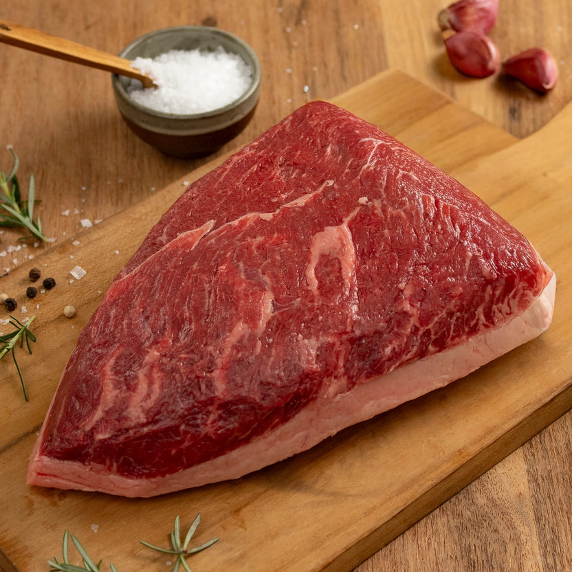
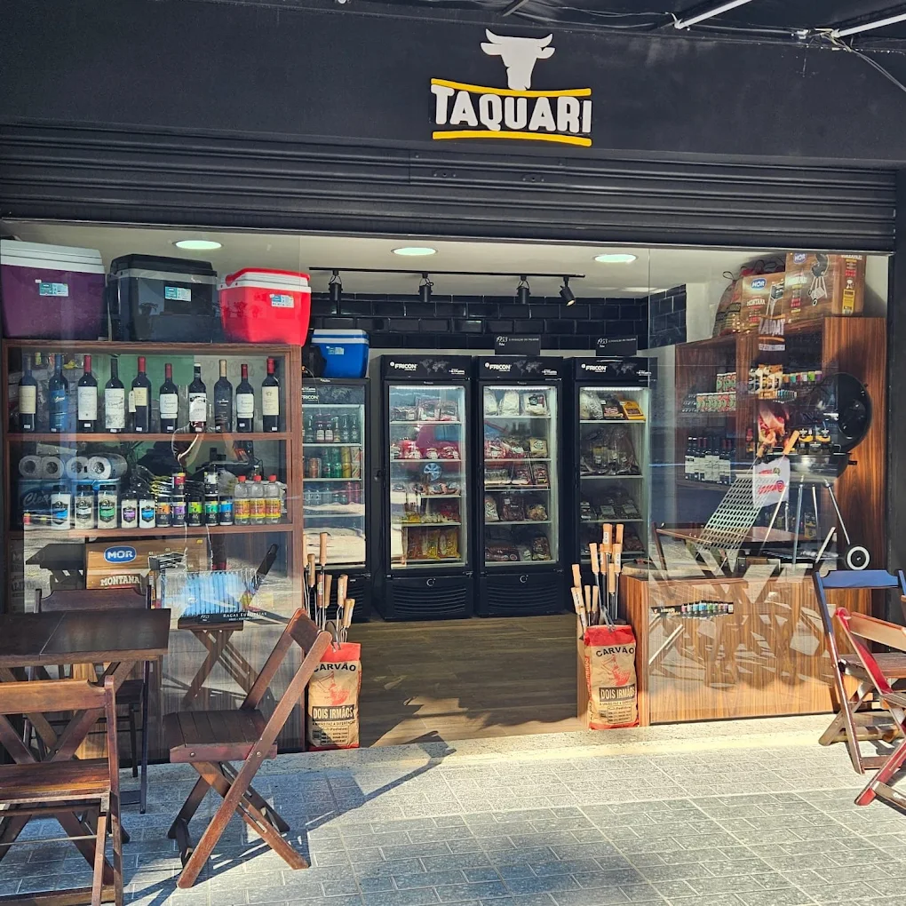
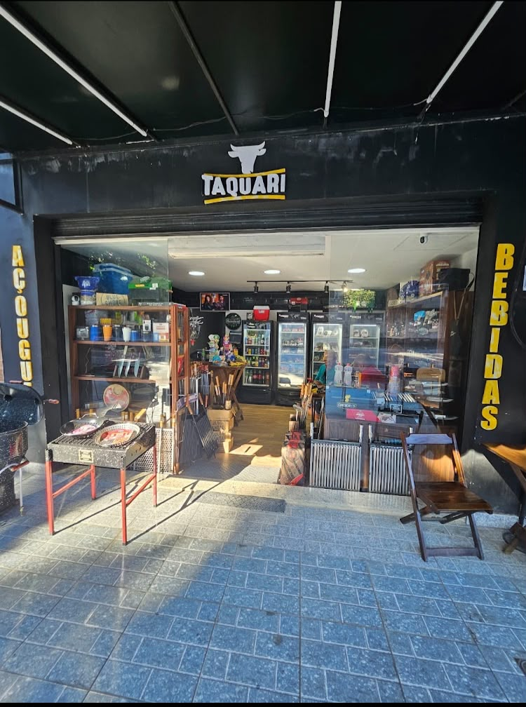
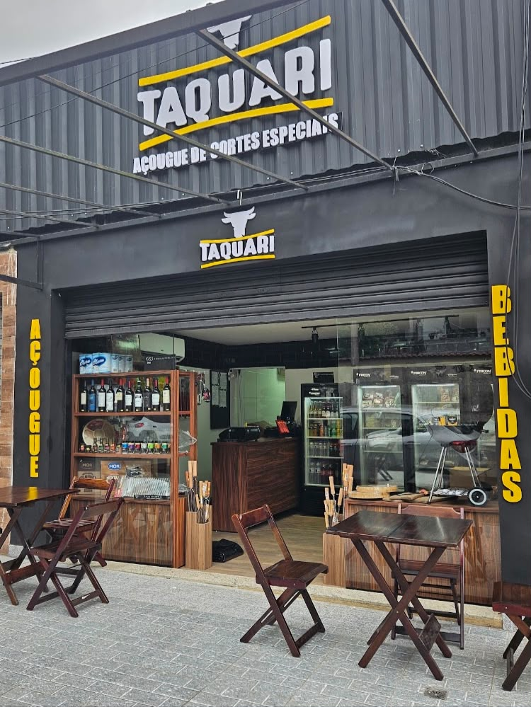

Imagem ilustrativa
CORTES ESPECIAIS · JARDIM PRIMAVERA
SEU CHURRASCO COMEÇA AQUI.
Carnes nobres, bebidas, temperos e acessórios para o seu próximo churrasco. Conheça o Taquari em Jardim Primavera, Duque de Caxias.


Cortes especiais
Bebidas e temperos
Carvão e defumação
Acessórios para churrasco
01 / A escolha do corte
O corte que combina com o seu churrasco.
Explore alguns dos cortes apresentados pelo Taquari e consulte as opções disponíveis.
Imagem ilustrativaConsulte a disponibilidade dos cortes pelo nosso canal de atendimento.
02 / O churrasco por completo
Além da carne, os complementos do churrasco.

Bebidas & temperos
Complementos para acompanhar a carne e o preparo.
Facas, grelhas & churrasqueiras
Utensílios e equipamentos apresentados na loja.
Carvão & defumação
Consulte carvão, briquetes e itens de defumação.
Da escolha do corte aos detalhes do preparo.
Conheça as opções de carnes, temperos, bebidas e acessórios do Taquari para planejar seu próximo churrasco.
Conversar sobre meu churrasco
03 / De portas abertas
Conheça o Taquari.
Em Jardim Primavera, Duque de Caxias, o Taquari reúne cortes especiais e produtos para churrasco em uma loja com bebidas, temperos e acessórios.
Visitar a loja
04 / Do seu jeito
Consulte os produtos e as opções de entrega.
Seu próximo churrasco começa com uma conversa.
- 01
Escolha
Informe os cortes e produtos que procura.
- 02
Consulte
Confira disponibilidade, valores e entrega.
- 03
Combine
Finalize os detalhes diretamente com a loja.
Consultar entrega no Instagram
Consulte a área atendida, a taxa e o prazo para o seu endereço.
Por dentro do Taquari
Acompanhe o Taquari.
Veja publicações de cortes, produtos e novidades no Instagram.
Antes de acender a brasa
Dúvidas comuns.
Onde fica o Taquari?
Avenida Primavera, 256, Jardim Primavera, Duque de Caxias — RJ.
Quais são os horários?
Terça a sexta-feira, das 10h às 18h30. Sábado, das 9h às 19h. Domingo, das 9h às 14h. Segunda-feira: fechado. Consulte o atendimento em feriados.
O Taquari oferece delivery?
O serviço é anunciado em nosso perfil. Consulte com a loja a disponibilidade para seu endereço, taxas e prazos pelo Instagram.
Como consultar cortes e preços?
Entre em contato pelo nosso canal disponível no site para consultar as opções, estoques e os valores atualizados.
Além das carnes, o que encontro na loja?
Bebidas, temperos e itens para churrasco, como carvão, grelhas, facas e acessórios, sujeitos à disponibilidade.
Seu próximo destino
Visite o Taquari em Jardim Primavera.
-
EndereçoAvenida Primavera, 256
Jardim Primavera
Duque de Caxias — RJ, 25215-255 -
Horário de FuncionamentoTerça a sexta: 10h às 18h30
Sábado: 9h às 19h
Domingo: 9h às 14h
Segunda: Fechado